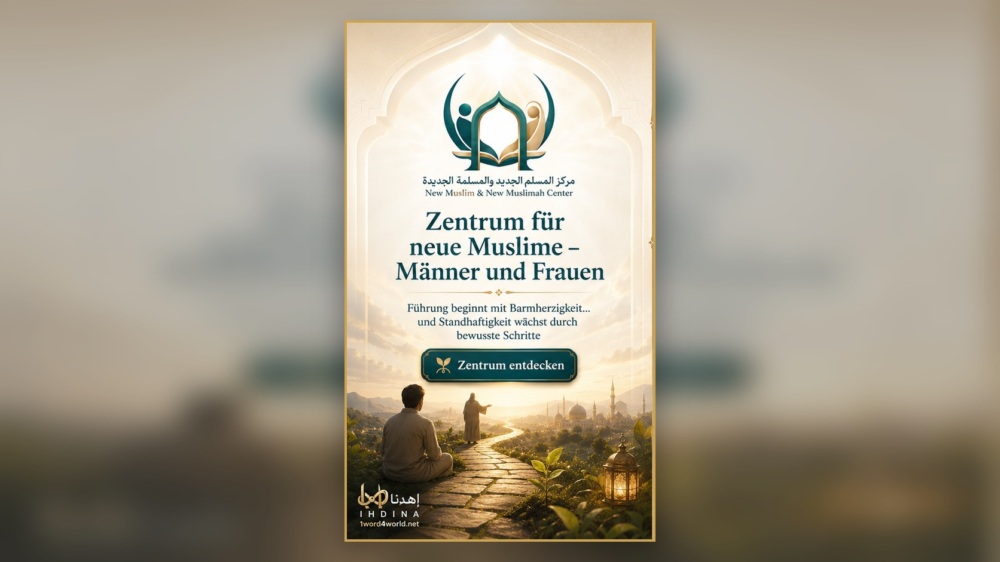

Zentrum für neue Muslime – Männer und FrauenDrei globale Zugänge
Wähle den Zugang, der zu dir passt
Beginne dort, wo du wirklich stehst, und lass dich von der Plattform zum passendsten nächsten Schritt führen.
Der Unterschied, den wir schaffen
Warum IHDINA?
Wir sind keine weitere Inhaltsbibliothek, sondern ein personalisiertes System für Führung und Bildung, gegründet auf Offenbarung und aufmerksam für den Menschen und seine Phase.

91
Weltsprachen
Eine Vision, die Grenzen überwindet, damit Führung den Menschen in seiner Sprache erreicht.

Intelligenter Interaktiver Tafsir
Das Wissensrückgrat, das Text, Mensch, Lebensphase und Veränderung miteinander verbindet.

Progressive qur’anische Methode
Simulation der Logik der ersten Offenbarung und der Wissensblöcke statt zufälliger Inhalte.

Geführte persönliche Reise
Wir verstehen dich, führen dich und begleiten dich zu deinem nächsten Schritt.
Ausgewählte Projekte des IHDINA-Ökosystems
Ausgewählte Projekte
Jedes Projekt hat seine eigene Identität und Seite, während die Plattform sie in einer gemeinsamen Vision vereint.
Zentrum für neue Muslime – Männer und Frauen
Ganzheitliche Fürsorge und weise Begleitung für einen guten Anfang, Standhaftigkeit und Wachstum.
Projekt entdecken →Dar Al-Arqam II
Eine Umgebung für Bildung, Gemeinschaft und Aufbau, die den Geist der ersten Erziehung in die Gegenwart bringt.
Projekt entdecken →Intelligenter Interaktiver Tafsir
Tieferes Verstehen, intelligentere Verknüpfungen, echte Veränderung.
Jetzt entdecken →

Das IHDINA-Versprechen
Eine globale Plattform für die Gestaltung von Führung und den Aufbau des Menschen durch Offenbarung
Hin zu einem Menschen, der Allah bewusst dient, Offenbarung methodisch empfängt und sich durch Wissen, Läuterung und Handlung zu nachhaltigem Ihsan entwickelt.
Allah
Ursprung und höchstes Ziel
Offenbarung
Führung und Methode
Der Mensch
Empfänger und sich Verwandelnder
Der heutige Schritt kann dein ganzes Leben verändern
Deine Reise zur Führung beginnt hier
Beginne dort, wo du bist, und lass dich von der Offenbarung zu deinem nächsten Schritt führen.